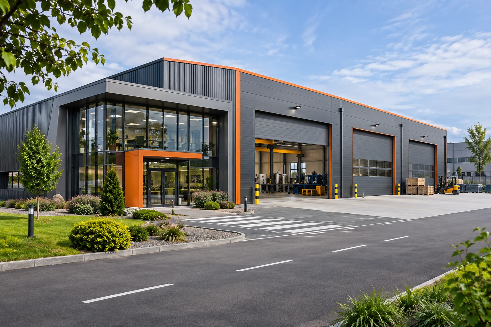
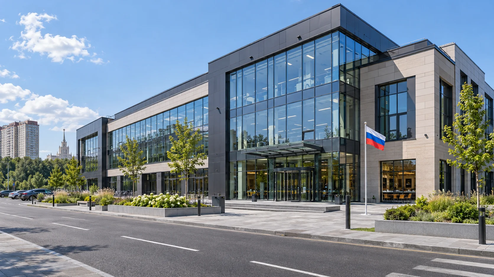
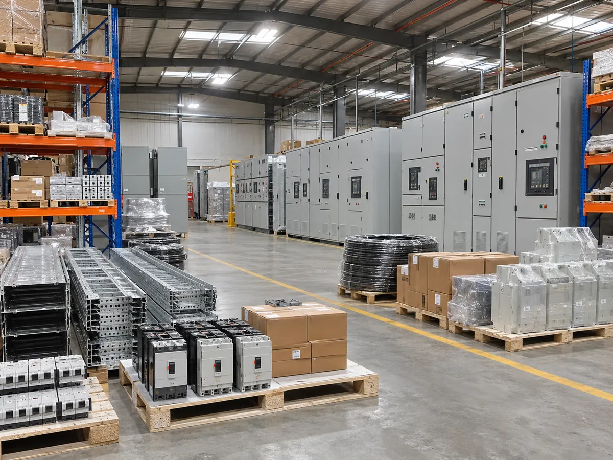
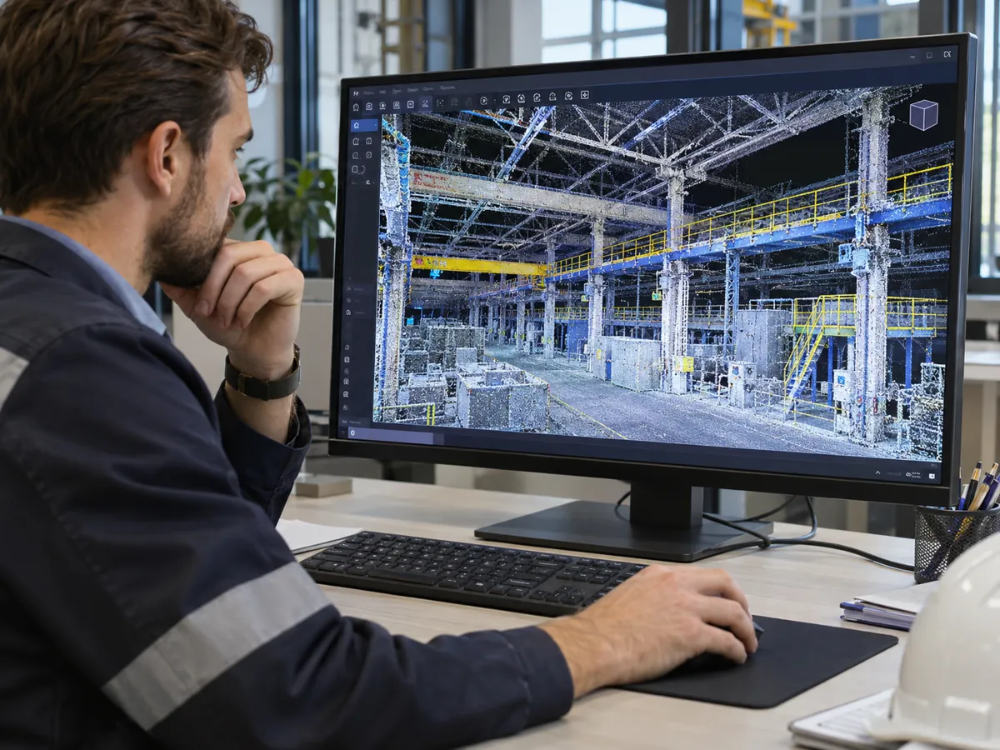

Строительство и сопутствующие услуги — в одном объединении
Выберите направление и расскажите о задаче. Под конкретный проект МосПромСтрой объединяет профильные строительные, инжиниринговые и производственные компетенции.
Четыре направления. Каждая услуга ведёт на подробную страницу.
Строительство
Четыре специализации для частных, промышленных и коммерческих объектов. Открыть общий раздел строительства →

Быстровозводимые здания
Ангары, склады и корпуса из металлоконструкций.
Подробнее →
Дом твоей мечты
Загородные дома, коттеджи и индивидуальная архитектура.
Подробнее →
Промышленное строительство и генподряд
Цеха, производственные и логистические объекты.
Подробнее →
Коммерческое строительство
Гостиницы, кафе, рестораны, магазины, бани и СПА.
Подробнее →Подготовка и обеспечение строительства
Площадка до начала работ, материалы и комплектация в ходе строительства.

Демонтаж и подготовка площадки
Оценка объекта, организация работ и освобождение участка.
Подробнее →
Бетон и бетонные изделия
Изготовление, поставка и обсуждение комплектации объекта.
Подробнее →
Поставки и комплектация
Материалы, оборудование и взаимодействие с заводами-партнёрами.
Подробнее →Проектирование, измерения и визуализация
Точные исходные данные, инженерные решения и представление будущего проекта.

3D-сканирование и геодезическая съёмка
Обмеры зданий, топосъёмка территорий, облака точек и ЦМР.
Подробнее →
Инжиниринг и технические решения
Инженерная проработка и координация сложных задач.
Подробнее →
Архитектурные макеты и 3D-модели
Физические макеты, цифровые модели и выставочные презентации.
Подробнее →Дизайн помещений
Частные и коммерческие интерьеры — от концепции до подготовки решений для реализации.
Один проект. Несколько компетенций. Единая координация.
Для сложного объекта могут понадобиться проектировщики, производители, инженерные и строительные компании. МосПромСтрой формирует состав участников под задачу и организует взаимодействие по согласованному плану.
Вашей специализации есть место в совместных проектах
Работаете в строительстве, инженерии, проектировании или производстве? Приходите со своей задачей — обсудим, какие возможности может открыть сотрудничество.